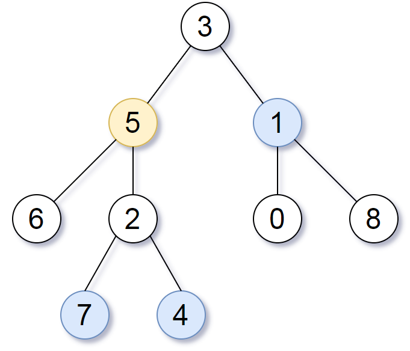

| Category | Difficulty | Likes | Dislikes |
|---|---|---|---|
| Algorithms | Medium | 11954 | 272 |
hash-table | tree | depth-first-search | breadth-first-search | binary-tree
facebook | amazon | microsoft | okta | google | salesforce | tiktok | walmart-labs | apple | wix
Given the root of a binary tree, the value of a target node target, and an integer k, return an array of the values of all nodes that have a distance k from the target node.
You can return the answer in any order.
Example 1:

Input: root = [3,5,1,6,2,0,8,null,null,7,4], target = 5, k = 2
Output: [7,4,1]
Explanation: The nodes that are a distance 2 from the target node (with value 5) have values 7, 4, and 1.Example 2:
Input: root = [1], target = 1, k = 3
Output: []
Constraints:
[1, 500].0 <= Node.val <= 500Node.val are unique.target is the value of one of the nodes in the tree.0 <= k <= 1000